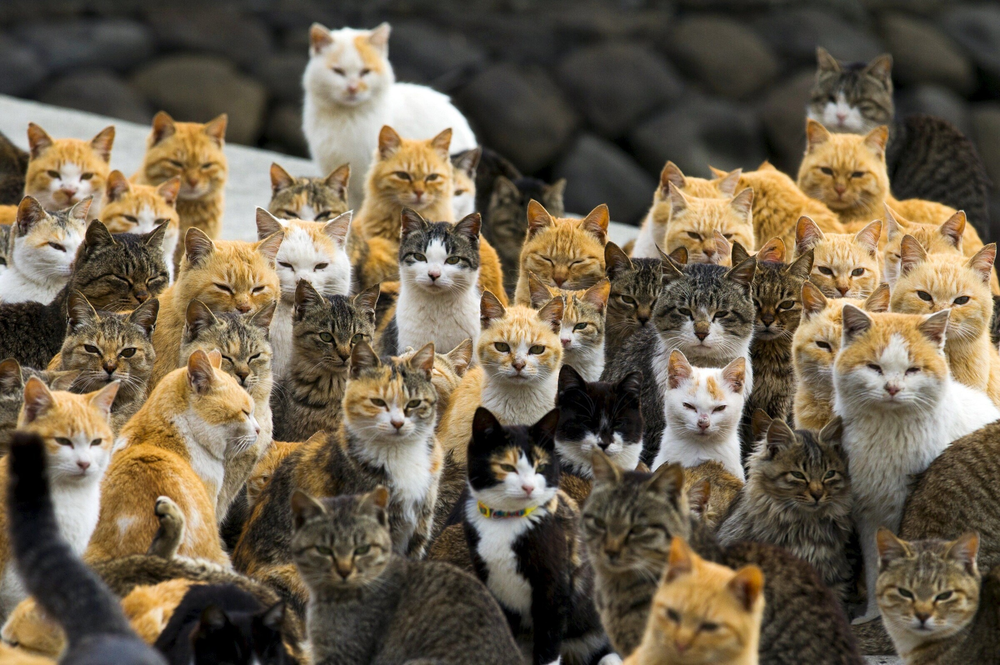
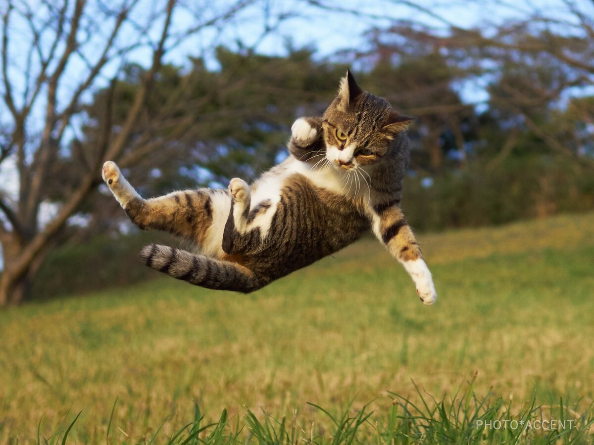
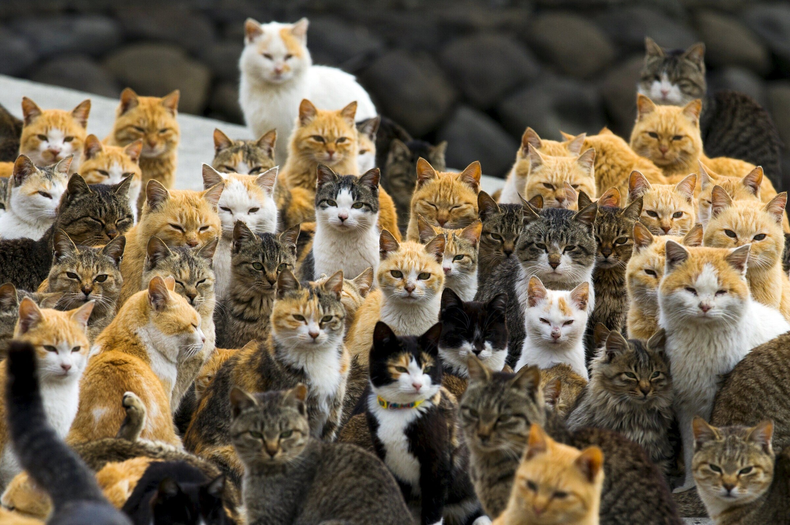
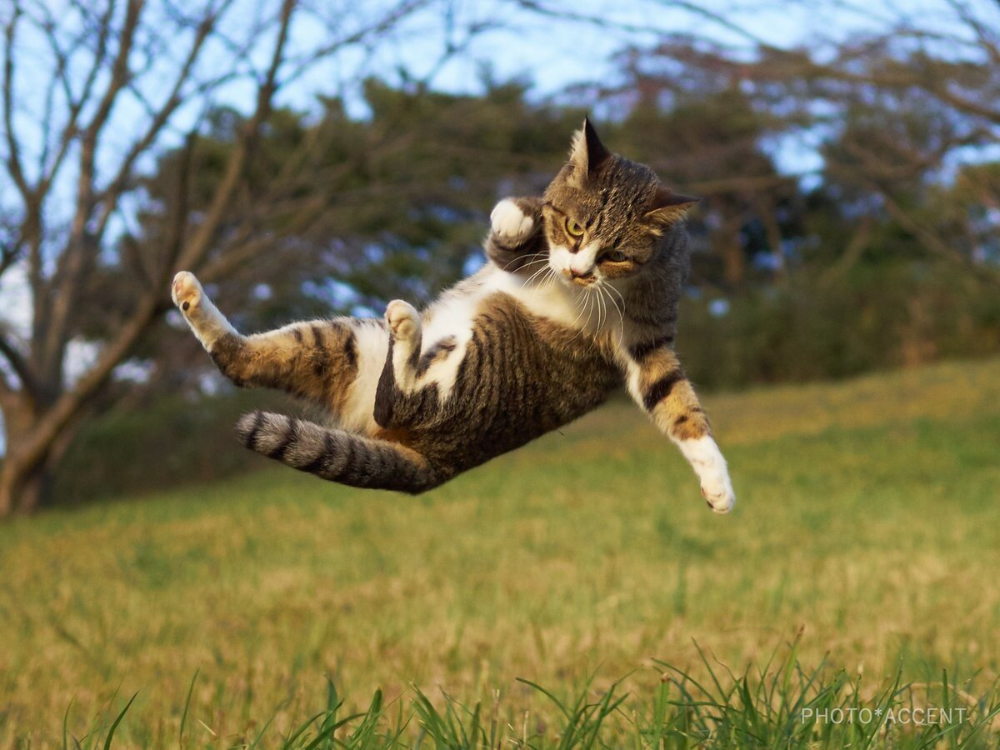

Дома́шняя ко́шка (лат. Felis catus) — домашнее животное, одно из наиболее популярных (наряду с собакой) «животных-компаньонов».
С точки зрения научной систематики, домашняя кошка — млекопитающее семейства кошачьих отряда хищных. Нередко домашнюю кошку рассматривают как подвид лесной кошки (Felis silvestris) — Felis s. catus, однако, с точки зрения современной биологической систематики, домашняя кошка является отдельным биологическим видом.
Смешное видео с котиками 


